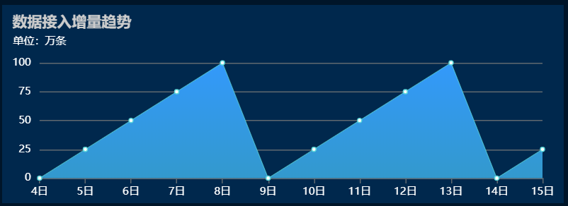

// 折线图
let lineChart = echarts.init(document.getElementById('lineChart'));
let lineOption = {
title: {
text: '数据接入增量趋势',
textStyle: {
color: '#cccccc',
fontSize: 14
}
},
tooltip : { // 悬浮提示
trigger: 'axis',
axisPointer: {
type: 'cross',
label: {
backgroundColor: '#6a7985'
}
}
},
grid: {
left: 5,
right: 20,
top: 50,
bottom: 5,
containLabel: true
},
xAxis : [
{
type : 'category',
boundaryGap : false, // 是否紧贴y轴
axisLine: { // x轴
lineStyle: {
color: '#606970'
}
},
axisTick: { // x轴刻度
lineStyle: {
color: '#606970'
}
},
axisLabel: { // x轴文字
color: '#ffffff',
fontSize: 10
},
data : ['4日', '5日', '6日', '7日', '8日', '9日', '10日', '11日', '12日', '13日', '14日', '15日']
}
],
yAxis : [
{
name: '单位：万条',
type: 'value',
nameTextStyle: {
color: '#ffffff',
fontSize: 10,
padding: [0, 0, 0, 0]
},
axisLine: { // y轴
show: false
},
axisTick: { // y轴刻度
show: false
},
axisLabel: { // y轴文字
color: '#ffffff',
fontSize: 10
},
splitLine: { // y轴分割线
lineStyle: {
color: '#606970'
}
},
splitNumber: 5, // 总分隔线条数
interval: 25 // 强制分隔单位
}
],
series : [
{
name:'数据接入增量',
type:'line',
stack: '总量',
itemStyle: {
color: '#5dd9da'
},
lineStyle: {
color: '#5dd9da',
width: 0.5
},
areaStyle: { // 颜色自上而下渐变
color: new echarts.graphic.LinearGradient(0, 0, 0, 1, [{ // 1代表上面
offset: 0,
color: '#3399fb'
}, {
offset: 1,
color: '#3399cd'
}]),
opacity: 1 // 填充区域透明度
},
data:[0, 25, 50, 75, 100, 0, 25, 50, 75, 100, 0, 25]
}
]
};
lineChart.setOption(lineOption);
